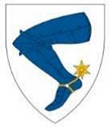

21808 Peder Örjansson Skancke
* omkring 1515 Hov, Hackås (Z)
† omkring 1553 Hov, Hackås (Z)
Länsman, lagrättsman
Blev ca 38 år
43616 Örjan Karlsson Skancke
* omkring 1470 Hov, Hackås (Z)
† 1550 Hov, Hackås (Z)
Nämndeman, fogde, väpnare
Blev ca 80 år

87232 Karl Örjansson Skancke
* omkring 1440 Hov, Hackås (Z)
† 1488 Hov, Hackås (Z)
Väpnare o bonde
Blev ca 48 år
174464 Örjan Karlsson Skancke
* omkring 1400 Hov, Hackås (Z)
† efter 1474 Hov, Hackås (Z)
Riddare, länsherre i Jämtland o Härjedalen, jordägare
174465 Margit Jönsdotter
* 1404 Skale, Söderhamn (X)
† 1477 Hov, Hackås (Z)
Blev högst 73 år
87233 Birgitta Pedersdatter
* omkring 1440 Jämtland (Z)
† omkring 1489 Hov, Hackås (Z)
Blev ca 49 år
174466 Peder Olofsson
* omkring 1410 Jämtland (Z)
† omkring 1474 Jämtland (Z)
Lagman i Jämtland o Härjedalen
Blev ca 64 år
174467 Kirsti Hansdotter
* omkring 1412 Jämtland (Z)
† omkring 1495 Jämtland (Z)
Blev ca 83 år